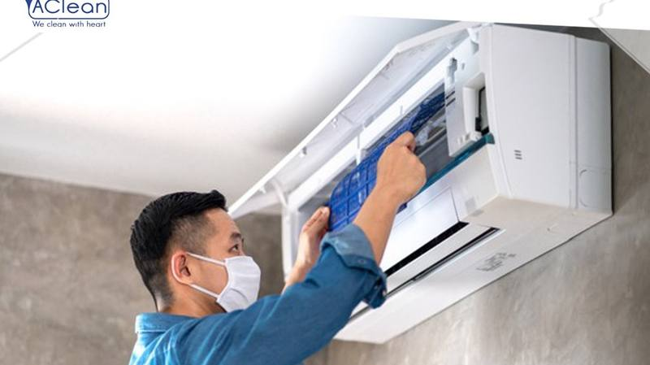

Siapa Kami?
AClean Service adalah penyedia jasa service AC profesional yang berbasis di Alam Sutera, Tangerang Selatan. Didirikan pada tahun 2015, kami memulai perjalanan dengan visi sederhana: memberikan layanan service AC yang jujur, transparan, dan berkualitas tinggi kepada masyarakat Tangerang Selatan.
Selama lebih dari 10 tahun, kami telah berkembang dari tim kecil menjadi penyedia jasa AC terpercaya yang melayani ribuan rumah tangga dan bisnis di area Alam Sutera, BSD City, Gading Serpong, Graha Raya-Bintaro, Karawaci, dan area Serpong lainnya.

Nilai-nilai Kami
💪 Profesionalisme
Teknisi kami terlatih dan bersertifikat. Setiap pekerjaan dikerjakan dengan standar tinggi menggunakan peralatan modern dan spare part original.
💰 Transparansi Harga
Tidak ada biaya tersembunyi. Kami selalu menginformasikan harga sebelum pengerjaan dimulai. Anda yang memutuskan.
⏱ Respons Cepat
Teknisi kami bisa tiba di lokasi dalam 30-60 menit setelah booking. Layanan tersedia 7 hari seminggu termasuk hari libur.
🛡 Garansi Resmi
Setiap layanan dilengkapi garansi resmi. Jika ada keluhan setelah service, kami kembali tanpa biaya tambahan selama masa garansi.
Perjalanan AClean
Awal Mula
AClean didirikan di Alam Sutera dengan 2 teknisi dan fokus pada cleaning AC rumah tangga.
Ekspansi Layanan
Menambah layanan service besar, pemasangan AC baru, dan pengisian freon. Tim berkembang menjadi 5 teknisi.
Jangkauan Lebih Luas
Memperluas area layanan ke BSD City, Gading Serpong, dan Graha Raya. Melayani 1.000+ pelanggan.
Rating 4.9 Google
Mencapai rating 4.9 bintang di Google Reviews dari 2.000+ pelanggan. Mulai melayani AC komersial dan central.
50.000 Unit AC
Milestone besar — telah men-service lebih dari 50.000 unit AC dengan 4.000+ pelanggan terlayani.
Terus Berkembang
Memperkuat layanan digital, memperluas jangkauan ke Jakarta, dan terus meningkatkan kualitas layanan.
Merek AC yang Kami Tangani
Tim AClean berpengalaman menangani semua merek AC: Daikin, Panasonic, LG, Samsung, Sharp, Mitsubishi, Gree, Midea, Haier, Toshiba, Hitachi, dan merek lainnya. Kami menangani AC split, cassette, standing floor, dan AC central.
Butuh Service AC?
Hubungi AClean sekarang. Teknisi profesional siap datang ke lokasi Anda!
💬 Hubungi via WhatsApp